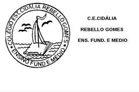

Cidália Rebello Gomes

,imgcla8ss="logo" src= "logo-removebg-png" alt= "logo cOlegio">
Colegio Estadual Cidalia Rebello Gomes
class="inicio"
- Nossa historia
- sobre nosso colegio
Eventos-
- fotos e arquivos
- contatos
sobre o nosso colegio
entao,quem foi cidallia rebello gomes? Teresa Jussara Luporini escreveu sobre essa educadora em 1992. Diz a autora que em 26 de fevereiro